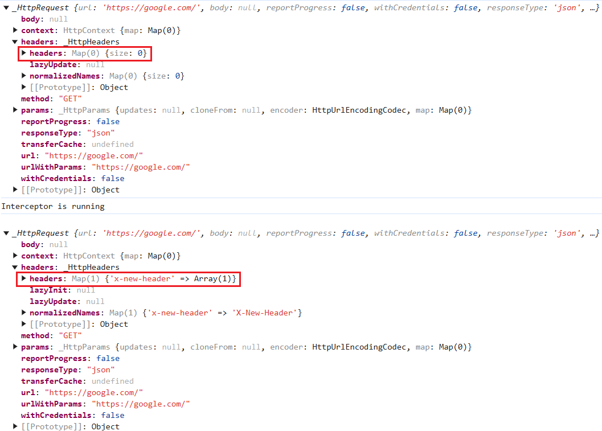
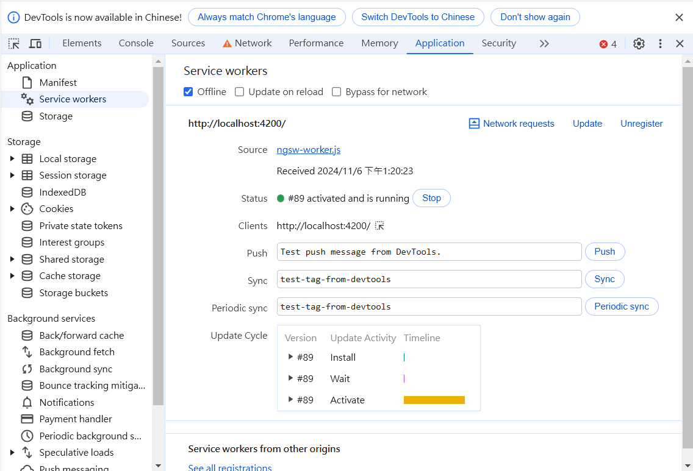

常用指令
安裝完成後，可以使用 ng 命令來建立、建置、測試和啟動 Angular 應用程式。
| 命令 | 描述 |
|---|---|
編譯 Angular 專案為生產環境版本 |
|
建構應用程式並啟動開發伺服器 |
|
基於後置的sub-command生成相對應的檔案 |
|
執行單元測試 |
|
執行端到端測試 |
補充: generate 指令
ng generate 指令可以用來生成 Angular 應用程式中的各種檔案，例如元件、服務、模組等。以下是一些常用的子指令：
| 子指令 | 描述 |
|---|---|
生成應用程式的App Shell |
|
生成應用程式 |
|
生成類別 |
|
生成元件 |
|
生成Config檔 |
|
生成指令 |
|
生成列舉 |
|
生成環境檔案 |
|
生成一個路由守衛 |
|
生成介面 |
|
生成函式庫 |
|
生成模組 |
|
生成管道 |
|
生成路由解析器 |
|
生成攔截器 |
|
生成服務 |
|
生成Service Worker |
|
生成Web Worker |
ng generate app-shell
會用來產生 app shell 元件，此元件主要用來在應用程式初始載入時快速啟動靜態渲染頁面，實現出在實際內容載入前先顯示出應用程式基本骨架給使用者看
-
生成檔案結構
src ├── app │ ├── app.config.server.ts │ └── app-shell │ ├── app-shell.component.html │ ├── app-shell.component.css │ ├── app-shell.component.spec.ts │ └── app-shell.component.ts └── main.server.ts
| 檔案 | 描述 |
|---|---|
app.config.server.ts |
應用程式中的伺服器端配置檔案，主要用於設定 Server-Side Rendering 相關的配置 |
app-shell.component.html |
app-shell要渲染的樣板內容 |
app-shell.component.css |
app-shell渲染內容的樣式 |
app-shell.component.spec |
app-shell的單元測試 |
app-shell.component.ts |
App Shell 功能的核心元件 |
main.server.ts |
應用程式伺服器端的進入點 |
ng generate application [name]
會在專案的projects資料夾下產生新的應用程式，當專案需要多應用程式時才會使用到，例如店商網站會有不同品牌的商品，但都使用相同的應用程式邏輯
-
生成檔案
projects/
└── application/
├── public/
├── src/
| └── ...
├── tsconfig.app.json
└── tsconfig.spec.json
除了一些共用的依賴與angular配置以外基本上檔案都跟初始應用程式是一樣的
ng generate class [name]
分別產生class檔案與class的單元測試檔案
-
生成檔案
app/ ├── ... ├── class.ts └── class.spec.ts
ng generate component [name]
產生一般的Angular元件
產生檔案
app/ ├── ... ├── app.component.ts ├── app.component.html ├── app.component.css └── app.component.spec.ts
ng generate config
產生一些配置檔案
-
karma.config.js: 用來設定單元測試環境
-
.browserslistrc: 與瀏覽器相關的相容性配置
ng generate directive [name]
用來生成自訂的屬性指令，此指令是用來改變DOM元素行為或是外觀
生成檔案
app/ ├── ... ├── app.directive.ts └── app.directive.spec.ts // 單元測試用
app.directive.ts
import {Directive, ElementRef} from '@angular/core';
@Directive({
standalone: true,
selector: '[appHighlight]',
})
export class HighlightDirective {
constructor(private el: ElementRef) {
this.el.nativeElement.style.backgroundColor = 'yellow';
}
}-
透過@Directive裝飾器將此元件變為屬性指令
-
設定selector屬性作為屬性名稱
app.component.html
<p appHighlight>Highlight me!</p>-
當html使用了屬性指令，便會執行元件的constructor，上述文字會變換成黃色
ng generate environments
會產生 Angular 環境的配置文件，用來管理不同環境下的環境變數
生成檔案
src/
├── ...
└── environments/
├── environment.development.ts
└── environment.ts // 默認環境，通常為production
簡單範例
environment.ts
export const environment = {
env: "pro"
};environment.development.ts
export const environment = {
env: "dev"
};分別在不同環境下設定相同的環境變數名，變數值表示當前的環境
app.component.ts
import { Component } from '@angular/core';
import { RouterOutlet } from '@angular/router';
import { environment } from '../environments/environment'; // 匯入環境變數配置
@Component({
selector: 'app-root',
standalone: true,
imports: [RouterOutlet],
templateUrl: './app.component.html',
styleUrl: './app.component.css'
})
export class AppComponent {
title = 'appcli';
env = environment.env; // 取得當前的環境內容
}app.component.html
<h1>{{ env }}</h1>當伺服器使用 production 配置啟動，標題會顯示pro，若使用 development 配置啟動，標題則會是dev
自訂環境
也可以自訂 Angular 的執行環境
-
新增自訂環境配置:
在
angular.json下的/architect/build/configurations新增testenv"testenv": {} -
在
environments/下新增自訂環境配置檔environment.testenv.tsenvironment.testenv.tsexport const environment = { env: "testenv" } -
在
angular.json的testenv配置下新增 fileReplacements，用來替換 environment 檔案"testenv":{ "fileReplacements": [ { "replace": "src/environments/environment.ts", "with": "src/environments/environment.testenv.ts" } ] }-
replace: 設定要替換的environment，通常預設為environment.ts，所以都會是替換此檔案
-
with: 設定要替換成哪個environment，換成剛新增的
environment.testenv.ts即可
-
-
使用自訂的環境配置啟動伺服器
ng serve --configuration=testenv
此時
<h1>標籤的內容就會變成 testenv
ng generate guard [name]
會產生 Angular 的路由防衛，用來保護路由，控制使用者是否可以訪問特定頁面
輸入指令時預設會有四個 Route Guard 選項:
-
CanActivate: 控制是否可以訪問該路由
-
CanActivateChild: 控制是否可以訪問子路由
-
CanDeactivate: 控制是否可以離開路由
-
CanMatch: 控制是否可以匹配該路由
生成檔案
app/ ├── ... ├── app.guard.ts └── app.guard.spec.ts // 單元測試用
ng generate interface [name]
創建介面
生產檔案
app/ ├── ... └── app.interface.ts
ng generate library [name]
會創建 Angular 函式庫，建立可重複使用的元件、服務或其他功能，並且可發布到 npm 提供其他專案使用
生產檔案
your-workspace/ ├── projects/ │ ├── my-lib/ │ │ ├── src/ │ │ │ ├── lib/ │ │ │ │ ├── my-lib.component.ts │ │ │ │ ├── my-lib.component.spec.ts │ │ │ │ ├── my-lib.service.ts │ │ │ │ └── my-lib.service.spec.ts │ │ │ └── public-api.ts │ │ ├── ng-package.json │ │ ├── package.json │ │ ├── tsconfig.lib.json │ │ ├── tsconfig.lib.prod.json │ │ └── tsconfig.spec.json └── package.json
檔案說明
| 檔案 | 描述 |
|---|---|
public-api.ts |
函式庫的公開 API 入口點，用來決定哪些內容要對外公開讓使用者使用 |
ng-package.json |
用來配置如何打包 Angular 函式庫的配置檔，使用 ng-packagr 工具將函式庫編譯打包成符合 Angular Package Format (APF) 的格式 |
ng generate module [name]
產生 Angular 的模組，模組是用來封裝各種元件、服務、管道等多功能集合。
生產檔案
app/
├── ...
└── app-module/
└── app-module.module
library & module 總結
library
-
通常用在跨專案的共同程式碼
-
同時包含多個module與各元件
-
可以發佈到npm上供其他人使用
module
-
主要用在單個應用程式內
-
應用程式內的功能分組
-
組織和封裝相關的元件、服務、管道等
ng generate pipe [name]
會產生 Angular 的管道(Pipe)，管道通常用於轉換顯示的資料格式
生產檔案
app/ ├── ... ├── app.pipe.ts └── app.pipe.spec.ts
ng generate resolver [name]
產生路由解析器，主要功能是在進入路由前先取得資料，確保元件在顯示時已經有需要的資料
生成檔案
app/ ├── ... ├── app.resolver.ts └── app.resolver.spec.ts
ng generate interceptor
會產生出 Angular 的請求攔截器，當應用程式發出request請求時都會先經過攔截器的處理
生成檔案
app/ ├── ... ├── app.interceptor.ts └── app.interceptor.spec.ts // 單元測試用
使用前需要先設定provider
app.config.ts
export const appConfig: ApplicationConfig = {
providers: [
provideHttpClient(
withInterceptors([appInterceptor])
)
]
};簡單範例
在攔截器裡新增標頭內容
app.interceptor.ts
import { HttpInterceptorFn } from '@angular/common/http';
export const appInterceptor: HttpInterceptorFn = (req, next) => {
console.log(req);
console.log("Interceptor is running");
const newReq = req.clone({
headers: req.headers.set('X-New-Header', 'new header value')
});
console.log(newReq);
return next(newReq);
};
當應用程式發出 request 時毀被攔截器先攔截下來， 上述範例將發出去的 request 在攔截器當中新增 header 的內容，最後再把新的 request 給繼續發出去
設定多個攔截器
app.config.ts
export const appConfig: ApplicationConfig = {
providers: [
provideHttpClient(
withInterceptors([
appInterceptor1,
appInterceptor2,
appInterceptor3,
appInterceptor4
])
)
]
};若設定多個攔截器則會按照陣列順序依序攔截request
apptInterceptor1 → appInterceptor2 → appInterceptor3 → appInterceptor4
interceptor & resolver 總結
resolver
-
在路由啟動前先行執行
-
用在啟動路由前預載入資源
-
作用於特定路由上
interceptor
-
在發出 http 請求前先執行
-
常用於權限驗證、或錯誤處理
-
作用於全域環境上
ng generate service
會產生 Angular 的服務，通常會用來實作一些商業邏輯、數據處理、HTTP請求等功能
生成檔案
app/ ├── ... ├── app.service.ts └── app.service.spec.ts
ng generate service-worker
用來為 Angular 添加 Service Worker 的配置，使用此指令時就會自動將Service Worker 註冊到應用程式，可以讓應用程式具有離線運行能力、快取資源、接收推送通知等 PWA (Progressive Web App) 功能。
產生檔案
your-workspace/ ├── ... └── ngsw-config.json
啟動伺服器後在開發者工具的 Application 的 Service Worker 中就會看到已經註冊上去的 Service-Worker 
-
ngsw-config.json: Service Worker的配置文件
ng generate web-worker [name]
會產生Web Worker檔案，Web Worker 允許在背景執行 JavaScript 程式，不會阻塞主執行緒。
產生檔案
your-workspace/ ├── ... ├── src/ | └── app/ | └── app.worker.ts └── tsconfig.worker.json
檔案說明
| 檔案 | 描述 |
|---|---|
app.worker.ts |
Web Worker 的主要程式檔案，運行在獨立的執行續，不會引響到主要的執行續 |
tsconfig.worker.json |
Web Worker 專用的 TypeScript 編譯配置檔 |